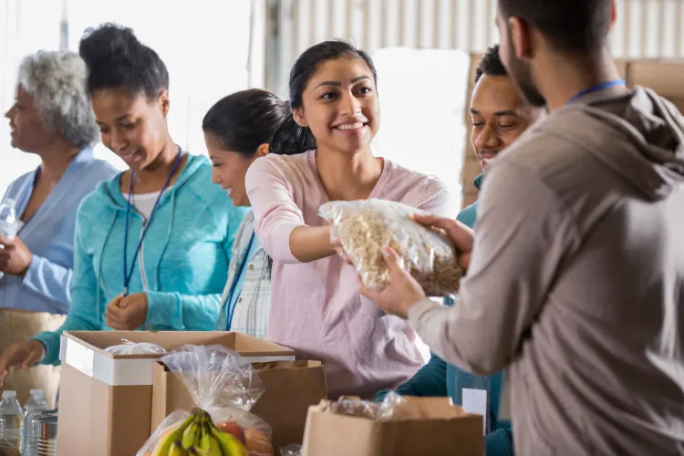

Transformando excedentes em solidariedade
Milhares de alimentos ainda próprios para consumo são descartados todos os dias. O FoodConnect conecta doadores, instituições e famílias para reduzir o desperdício de alimentos e fortalecer a solidariedade em nossa comunidade.


